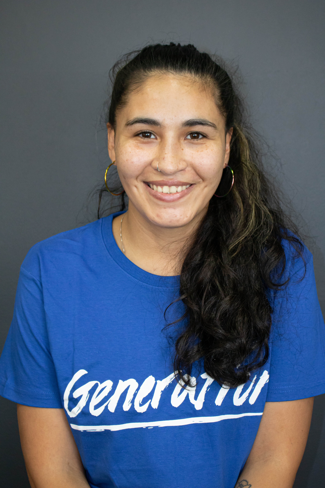

Curriculum Vitae
Nombre: Genesis Abril Quezada Rodriguez
Correo: genesisabril.qr@gmail.com
Número: +56966308443
Edad: 27
Fecha nacimiento: 16/07/1994
DNI: 19656531-0
LinkedIn:
Ingrese al perfil Genesis Quezada

Desarrolladora FullStack Java Junior, Tengo un certificado en desarrollo web orientado a back end y front end, en este aplicamos conceptos como base de datos (MYSQL), manejo de framework, (Spring Boot) y todo en base al lenguaje de programación Java,
me caracterizo por ser alguien perseverante, con buen trato hacia los demás, me desempeño bien en grupo y me gusta asumir nuevos retos en función de mi futuro.
FORMACIÓN ACADÉMICA
GENERATION CHILE
BOOTCAMP: Desarrolladora FullStack Java Junior.
FRONT END
- Desarrollo frontend con REACT
- Construcción de UI utilizando Material UI
- Unit testing web components
- Manejo de HTML5 y CSS3
- Instalación de paquetes utilizando NODEJS (NPM)
- Diseño con BOOTSTRAP
- JavaScript
BACK END
- -Diseño e implementación de algoritmos complejos en lenguaje java.
- Pruebas de software utilizando JUnit
- Desarrollo de REST API utilizando Spring Boot
- Integración con base de datos utilizando JPA
- Manejo de SQL (MYSQL)
OTRAS HERRAMIENTAS
- Versionamiento de código con Git en Github
- Metodologías ágiles SCRUM (Kanban, Trello, Miro)
- Manejo de IDE - INTELLIJ IDEA (Eclipse)
- Web applications build deploy
- DBEAVER (MYSQL)
- VSCode
DUOC UC
- Carrera: Técnico en preparación física (completo). Marzo 2013 – Nov 2016
ANTECEDENTES LABORALES
Kallplat Chile Ltda
- Cargo: Supervisora y analista de calidad. Enero 2018 – Junio 2022
- Cargo: Asesora técnica y ejecutiva atención al cliente. Enero 2018 – Junio 2022
ACTIVIDADES E INTERESES
- Técnico y Preparador físico
- Entrenadora de fútbol
- Futbolista amateur